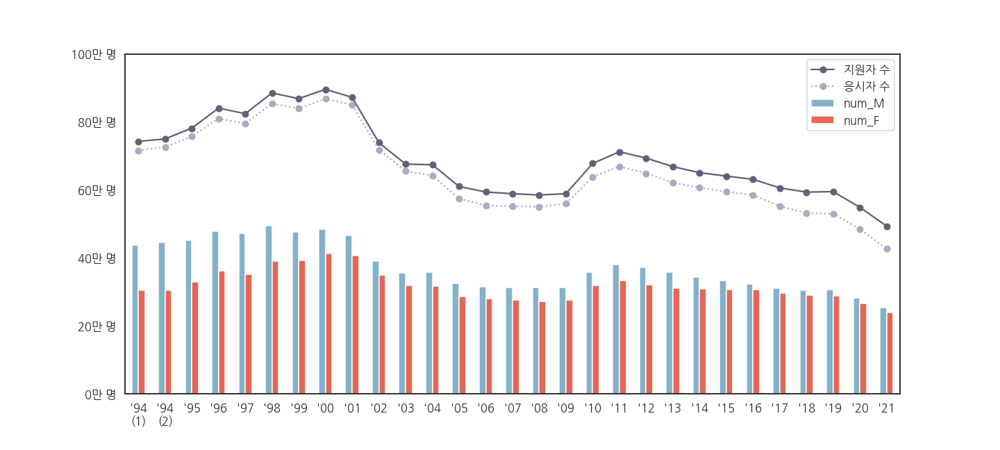
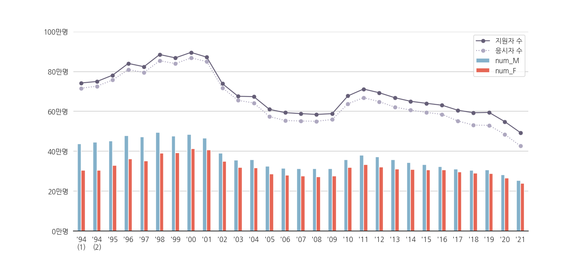
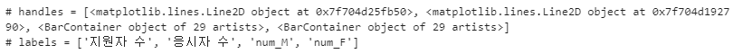
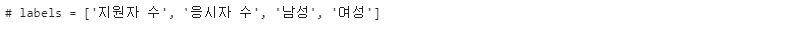
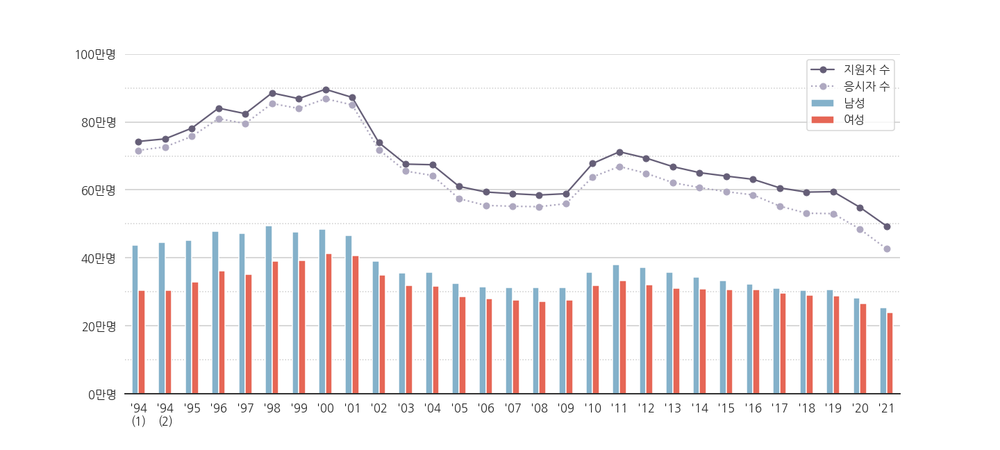
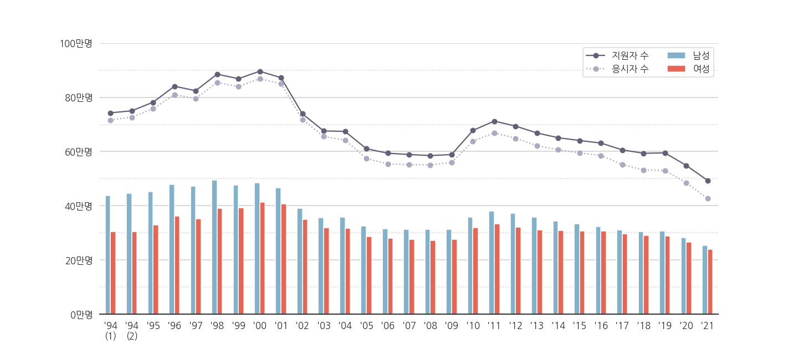
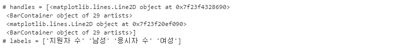
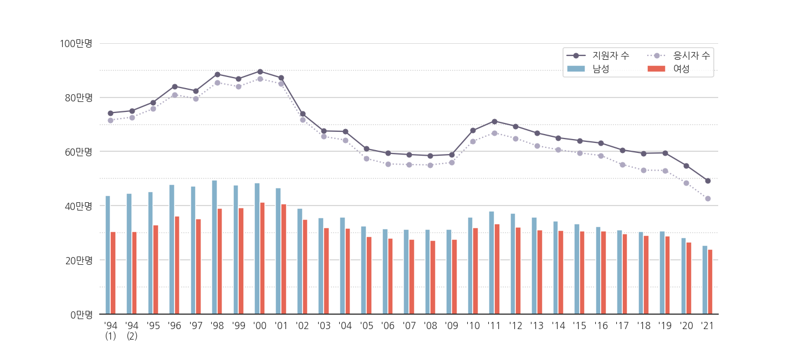
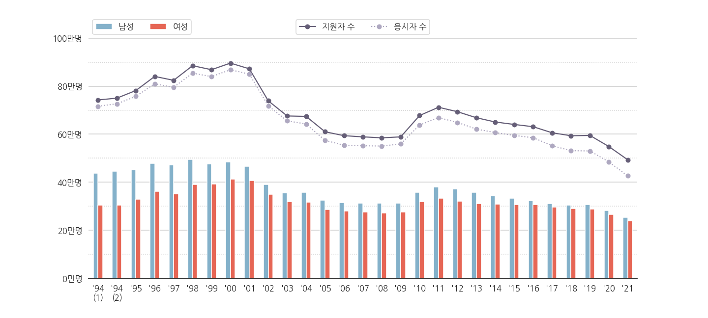

- 지난 글에서 수능 데이터를 시각화해봤습니다.
- 그림은 나왔는데 틀과 legend가 정리되지 않았습니다.
- spine, grid, legend를 정리하고 부가 정보를 넣어봅시다.
- 이번 글에서는 부분적으로 필요한 코드 위주로 기술하고, 가끔 전체 코드를 보이도록 하겠습니다.
2. spines

- line plot과 bar plot이 네모 상자 안에 갇혀있습니다.
- 불필요한 spines를 제거해서 시인성을 높여봅니다.
1
2
3ax.spines["left"].set_visible(False)
ax.spines["right"].set_visible(False)
ax.spines["top"].set_visible(False)
3. grids
3.1. y축 grid (major)
ax.grid()를 사용해서 넣어줍니다.- y축에만 넣을 것이므로
axis='y'를 붙입니다.1
ax.grid(axis="y")
3.2. y축 grid (minor)
- major ticks에만 grid를 그어주니 시원시원한 한편 좀 허전하기도 합니다.
- minor ticks에도 grid를 그어주고 싶습니다.
- 아래 코드에 주석으로 설명을 달았습니다.
1
2
3
4
5
6
7
8
9
10
11
12
13
14
15
16
17
18
19
20
21
22
23
24
25
26
27
28
29
30
31
32
33
34
35
36
37
38
39
40
41
42
43
44
45
46
47
48
49
50
51
52
53
54# major ticks와 minor ticks를 제어하기 위한 import
from matplotlib.ticker import (MultipleLocator, AutoMinorLocator)
fig, ax = plt.subplots(figsize=(20, 9), sharey=True)
df_sn[["year", "num_M", "num_F"]].plot.bar(x="year", y=["num_M", "num_F"], ax=ax,
color={"num_M": color_M, "num_F": color_F})
ax.plot(df_sn["num_total"], 'o-', color=color_total, label="지원자 수")
ax.plot(df_sn["num_test"], 'o:', color=color_test, label="응시자 수")
ax.set_ylim(0, 1000000)
# yticks major/minor 설정
ax.yaxis.set_major_locator(MultipleLocator(200000)) # major는 20만명 단위
ax.yaxis.set_major_formatter('{x:.0f}')
ax.yaxis.set_minor_locator(MultipleLocator(100000)) # minor는 10만명 단위
ax.yaxis.set_minor_formatter('{x:.0f}')
# yticks: major
yticks = ax.get_yticks()
ax.set_yticks(yticks[1:-1]) # major ticks 범위가 무의미하게 넓어서 잘라줍니다.
yticklabels = ax.get_yticklabels()
ax.set_yticklabels([f"{y//10000:.0f}만명" for y in yticks[1:-1]])
# yticks: minor
#- get(set)_yticks, yticklabels에 minor=True를 넣으면 minor tick에 적용합니다.
#- 이 경우 major ticks에는 적용되지 않습니다.
yticks_minor = ax.get_yticks(minor=True)
ax.set_yticks(yticks_minor[1:-1], minor=True) # minor ticks 범위도 잘라줍니다.
yticklabels = ax.get_yticklabels(minor=True)
# ax.set_yticklabels([f"{y//10000:.0f}만명 " for y in yticks_minor[1:-1]], minor=True)
ax.set_yticklabels([], minor=True)
xticks = ax.get_xticks()
ax.set_xticks(xticks)
xticklabels = [f"'{x.get_text()[2:]}" for x in ax.get_xticklabels()]
xticklabels[0] = xticklabels[0] + "\n(1)"
xticklabels[1] = xticklabels[1] + "\n(2)"
ax.set_xticklabels(xticklabels, rotation=0)
ax.set_xlabel("")
# spines
ax.spines["left"].set_visible(False)
ax.spines["right"].set_visible(False)
ax.spines["top"].set_visible(False)
# grid
ax.grid(axis="y", which="major") # major grid. 기본 스타일 = 실선
ax.grid(axis="y", which="minor", ls=":") # minor grid. 스타일 = 점선
ax.legend()
- major와 minor를 따로 제어하는 것은 다소 성가신 것이 사실입니다.
- 그래서 저는 웬만하면 major ticks만 활용합니다.
- major ticks로 불충분한 경우에 한해 minor ticks를 활용합시다.
4. 범례legend
- 우리는 회차별 남녀 지원자 수와 총 지원자, 응시자를 그렸습니다.
- 그런데 legend에 num_M, num_F로만 나와있네요.
- 대강 남녀 숫자겠지 짐작은 하겠지만 확실하게 알려줘야 합니다.
4.1. 범례 고치기
- legend는 은근히 손을 대기 어려운 부분입니다.
- 데이터로 통제할 수 있는 부분도 아니고, 그림과 글자, 데이터를 가리키는 부분이 포함되어 있기 때문입니다.
- legend 통제의 기본은 표기될 요소(handles)와 표기될 이름(labels) 제어입니다.
- plot을 하면서 넣은
label=가.legend()명령으로 그림에 가서 붙습니다. - 그림에 붙은 legend를 다시 끄집어내는 명령은
.get_legend_handles_labels()입니다.1
2
3handles, labels = ax.get_legend_handles_labels()
print(f"# handles = {handles}")
print(f"# labels = {labels}")
4.1.1. 범례 고치기 (1): [“num_M”, “num_F”] → [“남성”, “여성”]
handles에는 Line2D object가 두 개, BarContainer가 두 개 있습니다.
labels에 나온 것 처럼, 각기 지원자와 응시자, 남성과 여성 지원자 수입니다.
그렇다면 labels만 고쳐서 넣어주면 될 겁니다.
1
2labels = labels[:2] + ["남성", "여성"]
print(f"# labels = {labels}")
변경된 레이블을 반영할 차례입니다.
지난번 코드에서 마지막 부분
ax.legend()만 수정합니다.1
2labels = labels[:2] + ["남성", "여성"]
ax.legend(handles=handles, labels=labels)
4.1.2. 범례 고치기 (2): 1열 → 2열
- 남성과 여성으로 놓은 건 좋지만 성격이 다른 두 가지가 한데 모여서 보기 좋지 않습니다.
- 지원자와 응시자, 남성과 여성을 다른 열로 만들어주고 싶습니다.
ax.legend()에ncols=2로 지정함으로써 가능합니다.1
ax.legend(handles=handles, labels=labels, loc="upper right", ncol=2)
4.1.3. 범례 고치기 (3): 2열 → 2행
음. 나쁘지 않은 것 같기도 한데요,
성격이 다른 두 종류의 데이터를 열이 아니라 행으로 구분해보면 어떨까요?
행렬의 열과 행을 바꾸는 과정과 동일합니다.
$$\begin{pmatrix} a & b\ c & d\end{pmatrix}^\top = \begin{pmatrix} a & c\ b & d\end{pmatrix}$$numpy array의 transpose를 쓰면 좋습니다.
handles와 labels를
(1) np.array로 변환하고,
(2) (2, 2)로 reshape 후,
(3) transpose로 행과 열을 바꾸고 나서
(4) 다시 1차원으로 바꿔주면 됩니다.
설명은 복잡해 보이지만 코드는 한 줄로 가능합니다.
1
2
3
4
5handles, labels = ax.get_legend_handles_labels()
labels = labels[:2] + ["남성", "여성"]
print(f"# handles = {np.array(handles).reshape(2,2).T.flatten()}")
print(f"# labels = {np.array(labels).reshape(2,2).T.flatten()}")
이제 그림에 적용해보면, 이렇게 됩니다.

4.1.4. 범례 고치기 (4): 한 덩어리 → 두 덩어리
- legend가 여전히 마음에 들지 않습니다.
- 아예 둘로 그냥 쪼개버리기로 합니다.
- 앞에서 handles, labels로 legend를 제어할 수 있다는 것을 알았기 때문에,
ax.legend()를 두 번 사용해서 따로따로 그리면 될 것 같습니다.
- 그러나 의외의 복병이 있습니다.
ax.legend()를 두 번째 수행하는 순간 첫 번째 그린 legend가 자동으로 지워져 버립니다.- 첫 번째 legend를 저장해 두었다가 두 번째 legend 생성 후
add_artist()로 붙이면 됩니다.1
2
3
4
5
6
7
8
9# legend (1) 남성, 여성
handles, labels = ax.get_legend_handles_labels()
legend0 = ax.legend(handles=handles[2:], labels=["남성", "여성"], ncol=2,
loc="lower left", bbox_to_anchor=(0, 1))
# legend (2) 지원자 수, 응시자 수
legend1 = ax.legend(handles=handles[:2], labels=labels[:2], ncol=2,
loc="lower center", bbox_to_anchor=(0.5, 1))
ax.add_artist(legend0)